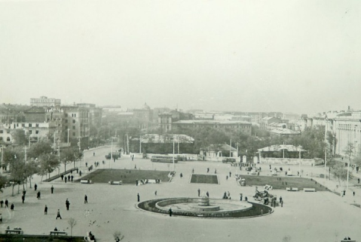
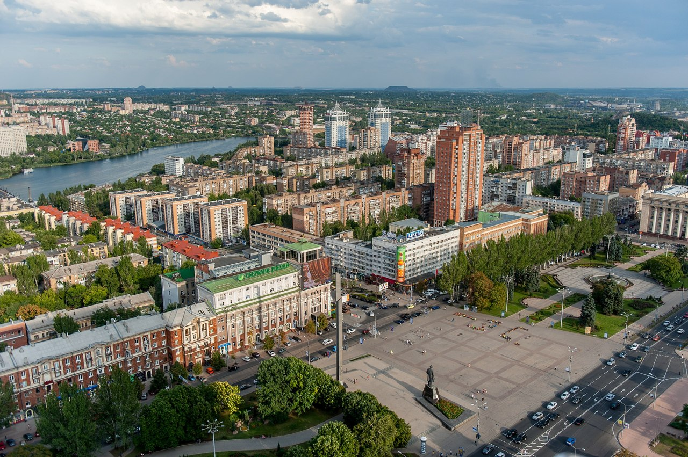

Площадь Ленина
Ранее, до 1927 года, площадь именовалась Сенной и была образована на месте Сенного рынка на окраине Юзовки. В то время она была значительно меньше и здесь размещались ветеринарная лечебница, жилые здания, гвоздильный завод и особняк Богомолова. В 1927 году началось строительство Дома Советов, что потребовало сноса особняка и конного двора. После завершения работ площадь была переименована в Советскую, а вокруг началось возведение новых зданий. С 15 июня 1928 года здесь начал курсировать первый донецкий трамвай.
В послевоенные годы библиотека интенсивно развивалась, расширялись помещения, пополнялся книжный фонд, внедрялись новые формы библиотечного обслуживания. Библиотека стала важным культурным и информационным центром Донецкой области, обслуживая широкий круг читателей: ученых, специалистов, студентов, учащихся и всех интересующихся литературой и знаниями. В этот период библиотека активно участвовала в научно-методической работе, проводила конференции, семинары, оказывала помощь другим библиотекам области.
Конечно площадь Ленина сильно поменялась за такой промежуток времени, но то, что точно можно утверждать – она всегда была и будет одним из самых любимых мест для прогулок среди жителей Донецка.